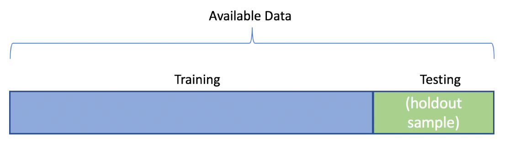

Prediction & Training/Test Sets
In this course we focus on the predictive modeling paradigm. In the end, we’ll often fit different families of models (say some multiple linear regression models, a tree based model, and a random forest model) to a given data set. We’ll then judge those models using some model metric to determine which model is best at predicting!
Let’s break down this process into a few steps.
Predictive Modeling Idea
First we’ll choose a form for a model. The types of models to consider often depends on the subject matter at hand. In this course, we’ll cover a few general types (or families) of models.
Once we’ve chosen a model type, we fit the model using some algorithm. Usually, we can write this fitting process in terms of minimizing some loss function.
We then need to determine the quality of predictions made by the model. We use a model metric to do this. Quite often, the loss function and model metric are the same, but this isn’t always the case!
For numeric response, the most common model metric is mean squared error (MSE) or root mean squared error (RMSE). For a categorical reponse, the most commmon model metrics are accuracy and log-loss (discussed in detail later).
Training vs Test Sets
Ideally we want our model to predict well for observations it has yet to see. We want to avoid overfitting to the data we train our model on.
The evaluation of predictions over the observations used to fit or train the model is called the training (set) error
- Let denote an observed value and denote our prediction for that observation. If RMSE was our metric:
- If we only consider this error, we’ll have no idea how the model will fare on data it hasn’t seen!
One method to obtain a better idea about model performance is to randomly split the data into a training set and test set.
- On the training set we can fit (or train) our models
- We can then predict for the test set observations and judge effectiveness with our metric
Example of Fitting and Evaluating Models
Consider our data set on motorcycle sale prices
library(tidyverse)
bike_data <- read_csv("https://www4.stat.ncsu.edu/~online/datasets/bikeDetails.csv")
bike_data <- bike_data |>
mutate(log_selling_price = log(selling_price),
log_km_driven = log(km_driven)) |>
select(log_km_driven, log_selling_price, everything())
bike_data# A tibble: 1,061 × 9
log_km_driven log_selling_price name selling_price year seller_type owner
<dbl> <dbl> <chr> <dbl> <dbl> <chr> <chr>
1 5.86 12.1 Royal … 175000 2019 Individual 1st …
2 8.64 10.7 Honda … 45000 2017 Individual 1st …
3 9.39 11.9 Royal … 150000 2018 Individual 1st …
4 10.0 11.1 Yamaha… 65000 2015 Individual 1st …
5 9.95 9.90 Yamaha… 20000 2011 Individual 2nd …
6 11.0 9.80 Honda … 18000 2010 Individual 1st …
7 9.74 11.3 Honda … 78500 2018 Individual 1st …
8 10.6 12.1 Royal … 180000 2008 Individual 2nd …
9 10.4 10.3 Hero H… 30000 2010 Individual 1st …
10 10.6 10.8 Bajaj … 50000 2016 Individual 1st …
# ℹ 1,051 more rows
# ℹ 2 more variables: km_driven <dbl>, ex_showroom_price <dbl>Here our response variable is the log_selling_price = ln(selling_price). We could consider the family of multiple linear regression (MLR) models with differing predictors (x variables).
- The basic MLR model with predictors models the average response variable given the predictors (that’s what represents, the average or expected , given (that’s what the vertical bar means) the values of , , …, ) as a linear function (linear in the parameter terms).
- is the intercept and each is a slope term associated with a predictor variable.
- As with SLR, we could model the error term with a Normal distribution if we were interested in making inference on the parameters
These basic models find coefficients that minimize the sum of squared residuals (i.e. uses squared error loss to fit the model).
- MLR modeling fitting criterion (the ‘hats’ just imply the parameters are estimates rather than the ‘true’ underlying values):
This turns out to be equivalent to doing maximum likelihood estimation with the iid error Normal, constant variance, assumption!
Consider three competing MLR models:
We can split the data randomly into a training set and a testing set. There are a lot of ways to do this. We’ll use the rsample::initial_split() function.
We commonly use an 80/20 or 70/30 training/test split. The proportion used in this split really depends on the amount of data you have and your subject matter expertise. More data in the test set means a better estimate of the model’s performance. However, less data in the training set means a more variable model (bigger changes in predictions from data set to data set).
Let’s split our
bike_datainto a training and test set.- Use
initial_split()to create an initial object - Use
training()andtesting()on that object to create the two data sets (note the number of observations in each set below!)
- Use
library(tidymodels)
set.seed(10)
bike_split <- initial_split(bike_data, prop = 0.7)
bike_train <- training(bike_split)
bike_test <- testing(bike_split)
bike_train# A tibble: 742 × 9
log_km_driven log_selling_price name selling_price year seller_type owner
<dbl> <dbl> <chr> <dbl> <dbl> <chr> <chr>
1 10.8 10.3 Bajaj … 30000 2012 Individual 1st …
2 8.95 10.6 Honda … 40000 2015 Individual 1st …
3 9.99 9.80 Bajaj … 18000 2005 Individual 1st …
4 10.2 10.5 Hero H… 35000 2017 Individual 1st …
5 10.8 11.4 Royal … 85000 2013 Individual 1st …
6 9.88 10.3 Bajaj … 30000 2008 Individual 1st …
7 10.5 10.5 Hero C… 35000 2014 Individual 1st …
8 9.68 9.90 Bajaj … 20000 2009 Individual 1st …
9 11.1 10.1 Hero H… 25000 2008 Individual 3rd …
10 8.94 12.2 Bajaj … 200000 2019 Individual 1st …
# ℹ 732 more rows
# ℹ 2 more variables: km_driven <dbl>, ex_showroom_price <dbl>bike_test# A tibble: 319 × 9
log_km_driven log_selling_price name selling_price year seller_type owner
<dbl> <dbl> <chr> <dbl> <dbl> <chr> <chr>
1 8.64 10.7 Honda … 45000 2017 Individual 1st …
2 9.39 11.9 Royal … 150000 2018 Individual 1st …
3 7.03 12.8 Yamaha… 365000 2019 Individual 1st …
4 7.44 12.1 Jawa 42 185000 2020 Individual 1st …
5 10.9 10.1 Suzuki… 25000 2012 Individual 1st …
6 11.0 9.62 Hero P… 15000 2008 Individual 1st …
7 7.60 12.1 Jawa S… 180000 2019 Individual 1st …
8 10.1 10.6 Honda … 42000 2017 Individual 1st …
9 9.21 9.95 Hero H… 21000 2009 Individual 1st …
10 9.95 10.7 Hero G… 45000 2018 Individual 1st …
# ℹ 309 more rows
# ℹ 2 more variables: km_driven <dbl>, ex_showroom_price <dbl>We can fit or train these models on the training set. Recall we use lm() to easily fit an MLR model via formula notation. With formula notation we put our response variable on the left and our model for the predictors on the right. The model can include interactions, non-linear terms, etc. If we just want ‘main effects’ we separate predictors with + on the right hand side (we’ll cover this in more detail later!)
- Let’s fit our three models and save them as objects.
reg1 <- lm(log_selling_price ~ year, data = bike_train)
coef(reg1) (Intercept) year
-186.17235057 0.09777273 reg2 <- lm(log_selling_price ~ log_km_driven, data = bike_train)
coef(reg2) (Intercept) log_km_driven
14.6228627 -0.3899342 reg3 <- lm(log_selling_price ~ year + log_km_driven, data = bike_train)
coef(reg3) (Intercept) year log_km_driven
-131.66741960 0.07191291 -0.24274055 Now we have the fitted models. Want to use them to predict the response
To get predictions from our model, we use the predict() function and specify the newdata we want to predict for as a data frame with column names matching our predictors in our models. If we don’t specify any newdata, it returns the predictions made on the training data.
- We can see the first few predictions on the training data from the first model via the code below
#year values the predictions are for
bike_train$year |> head()[1] 2012 2015 2005 2017 2013 2008#predictions made with our first model
predict(reg1) |> head() 1 2 3 4 5 6
10.546377 10.839696 9.861968 11.035241 10.644150 10.155287 Let’s use RMSE as our metric. Although not how we want to compare our models, we can obtain the training RMSE easily with predict(). Let’s code it up ourselves and also yardstick::rmse_vec() to find it (this is the tidymodels way).
#our own calculation for training RMSE
sqrt(mean((bike_train$log_selling_price - predict(reg1))^2))[1] 0.5378694- Now we can supply the actual responses and the model predictions to
yardstick::rmse_vec()
#using yardstick
yardstick::rmse_vec(bike_train$log_selling_price, predict(reg1))[1] 0.5378694#second and third models
#using yardstick
rmse_vec(bike_train$log_selling_price, predict(reg2))[1] 0.5669127#using yardstick
rmse_vec(bike_train$log_selling_price, predict(reg3))[1] 0.4924924These values represent a measure of quality of prediction by these models (as judged by our metric RMSE).
This estimate of RMSE for the predictions is too optimistic compared to how the model would perform with new data!
Really, what we want to compare is how the models do on data they weren’t trained on.
We want to find this type of metric on the test set. That means we want to use the truth from the test set ( for the test set) and compare that to predictions made for that test set observation ().
To do this in R we need to tell predict() about the newdata being the test set (bike_test). As this is a data frame with columns for our predictors, we can just pass the entire data frame for ease and predict() uses appropriate/needed columns to find our predictions.
#look at a few observations and predictions
bike_test |>
select(log_km_driven, log_selling_price) |>
mutate(model_1_preds = predict(reg1, newdata = bike_test))# A tibble: 319 × 3
log_km_driven log_selling_price model_1_preds
<dbl> <dbl> <dbl>
1 8.64 10.7 11.0
2 9.39 11.9 11.1
3 7.03 12.8 11.2
4 7.44 12.1 11.3
5 10.9 10.1 10.5
6 11.0 9.62 10.2
7 7.60 12.1 11.2
8 10.1 10.6 11.0
9 9.21 9.95 10.3
10 9.95 10.7 11.1
# ℹ 309 more rows- Now let’s find the test set error for each model
#obtain the test set RMSE for each model
rmse_vec(bike_test$log_selling_price, predict(reg1, newdata = bike_test))[1] 0.5746992rmse_vec(bike_test$log_selling_price, predict(reg2, newdata = bike_test))[1] 0.6548019rmse_vec(bike_test$log_selling_price, predict(reg3, newdata = bike_test))[1] 0.554596We see that our third model with both year and log_km_driven gives a better (by our metric) set of predictions!
When choosing a model, if the RMSE values were ‘close’, we’d want to consider the interpretability of the model (and perhaps the assumptions required by each model if we wanted to do inference too!)
- Note: we can do this with
yardstick::rmse()if our predictions are in the data frame.rmse()takes in thedataas the first argument, thetruthcolumn as the second, and theestimate(or predictions) as the third.
#look at a few observations and predictions
bike_test |>
select(log_selling_price, log_km_driven) |>
mutate(model_1_preds = predict(reg1, newdata = bike_test)) |>
rmse(truth = log_selling_price, estimate = model_1_preds)# A tibble: 1 × 3
.metric .estimator .estimate
<chr> <chr> <dbl>
1 rmse standard 0.575Recap
We generally need to go through a few steps when training and testing our model(s):
- Choose form of model
- Fit model to data using some algorithm
- Usually can be written as a problem where we minimize some loss function
- Evaluate the model using a metric
- RMSE very common for a numeric response
- Ideally we want our model to predict well for observations it has yet to see!
Use the table of contents on the left or the arrows at the bottom of this page to navigate to the next learning material!